Group
Author: Takin.solutions Ltd.
Version: 1.0
Group
Two or more people, potentially sub-divided into further groups, that can act collectively. For example a business or a religious organization.
| Name | URI | |
|---|---|---|
| Root Ontology Node | E74 Group | https://cidoc-crm.org/Entity/E74-Group/version-7.1.1 |
| Type Differentiator | N/A | N/A |
| Filed ID | Name | Description | Data Type | CRM Path |
|---|---|---|---|---|
| LAF.6 | Name | This field is used to record the string value of the name attributed to the documented group. | String | ->p1->E33_E41[4_1]->p190->rdf:literal |
| LAF.5 | Name Type | This field is used to record the type of the name attributed to the documented group. | Concept | ->p1->E33_41[4_1]->p2->E55[5_1] |
| LAF.7 | Name Language | This field is used to record the language of the name attributed to the documented group. | Concept | ->p1->E33_E41[4_1]->p72->E56[7_1] |
| LAF.44 | Source Reference Work for Name | This field is used to link to a source text in which the name denoting the documented group is used. | Reference Model [DHIM.5_Legal Document ] | ->p1->E33_E41[4_1]->p67i->E33[44_1] |
| LAF.11 | Type | This field is used to record the formal type of the documented group. | Concept | ->p2->E55[11_1] |
| LAF.12 | Meta-type | This field is used to record the metatype attributed to a formal classification. The function of a metatype is to enable the programmatic distinction between different kinds of type applied to the same documented entity. | Concept | ->p2->E55[11_1]->p2->E55 [12_1] |
| LAF.15 | Statement | This field is used to record the actual textual content of the statement describing the documented group. | String | ->p67i->E33[13_1]->p190->rdf:literal |
| LAF.14 | Statement Type | This field is used to record the formal type of the statement made about the documented group. | Concept | ->p67i->E33[13_1]->p2->E55[14_1] |
| LAF.16 | Statement Language | This field is used to record the language of the statement describing the documented group. | Concept | ->p67i->E33[13_1]->p72->E56[16_1] |
| LAF.55 | Source Reference Work for Statement | This field is used to link to a source text from which the statement describing the documented group is derived. | Reference Model [DHIM.5_Legal Document ] | ->p67i->E33[13_1]->p67i->E33[55_1] |
| LAF.10 | Identifier | This field is used to record an identifier attributed to the documented group. | String | ->p1->E42[8_1]->p190->rdf:literal |
| LAF.9 | Identifier Type | This field is used to record the type of the identifier attributed to the documented group. | Concept | ->p1->E42[8_1]->p2->E55[9_1] |
| LAF.167 | Member of Group | This field is used to link the documented group to a broader group of which it forms a part. | Reference Model [DHIM.2_Group] | ->P107i->E74[167_1] |
| LAF.172 | Actor Residence or Associated Location | This field is used to link the documented group to a place at which they have been located. | Reference Model [DHIM.3_Place] | ->P74->E53[172_1] |
| LAF.134 | Type | This field is used to record the formal type of the documented actor's professional activity. | Concept | ->P14i->E7[126_1]->P2->E55[134_1] |
| LAF.126 | Location | This field is used to link the documented actor's professional activity to a location at which it was carried out. | Reference Model [DHIM.3_Place] | ->P14i->E7[126_1]->P7->E53[126_2] |
| LAF.133 | Timespan | This field is used to link the documented actor's professional activity to an instance of time-span recording the temporal extent of the activity. | Collection [LAP.6_TimeSpan] | ->P14i->E7[126_1]->P4->E52[133_1] |
| LAF.138 | Statement | This field is used to link the documented actor's professional activity to a statement that describes it. | Collection [LAP.4_Statement] | ->P14i->E7[126_1]->P67i->E33[138_1] |
| DHIF.148 | Document Used | This field is used to link the documented professional activity to an instance of textual work used in the exercise of this activity in a manner consequential to its outcome. | Reference Model [DHIM.5_Legal Document] | ->P14i->E7[126_1]->P16->E33[DHIF.148_1] |
| LAF.147 | Type | This field is used to record the formal type of the documented group formation activity. | Concept | ->P95i->E66[139_1]->P2->E55[147_1] |
| LAF.139 | Location | This field is used to link the documented group formation activity to a location at which it was carried out. | Reference Model [DHIM.3_Place] | ->P95i->E66[139_1]->P7->E53[139_2] |
| LAF.142 | Actor | This field is used to link the documented group formation activity to an actor responsible for carrying it out. | Reference Model [DHIM.1_Person; DHIM.2_Group] | ->P95i->E66[139_1]->P14->E39[142_1] |
| LAF.146 | Timespan | This field is used to link the documented group formation activity to an instance of time-span recording the temporal extent of the activity. | Collection [LAP.6_TimeSpan] | ->P95i->E66[139_1]->P4->E52[146_1] |
| DHIF.143 | Document Used | This field is used to link the documented group formation activity to an instance of textual work used in the exercise of this activity in a manner consequential to its outcome. | Reference Model [DHIM.5_Legal Document] | ->P95i->E66[139_1]->P16->E33[DHIF.143_1] |
| LAF.151 | Statement | This field is used to link the documented group formation activity to a statement that describes it. | Collection [LAP.4_Statement] | ->P95i->E66[139_1]->P67i->E33[151_1] |
| LAF.161 | Type | This field is used to record the formal type of the documented group dissolution activity. | Concept | ->P99i->E68[153_1]->P2->E55[161_1] |
| LAF.153 | Location | This field is used to link the documented group dissolution activity to a location at which it was carried out. | Reference Model [DHIM.3_Place] | ->P99i->E68[153_1]->P7->E53[126_2] |
| DHIF.145 | Actor | This field is used to link the documented group dissolution activity to an actor responsible for carrying it out. | Reference Model [DHIM.1_Person; DHIM.2_Group] | ->P99i->E68[153_1]->P14->E39[DHIF.145_1] |
| LAF.160 | Timespan | This field is used to link the documented group dissolution activity to an instance of time-span recording the temporal extent of the activity. | Collection [LAP.6_TimeSpan] | ->P99i->E68[153_1]->P4->E52[160_1] |
| DHIF.144 | Document Used | This field is used to link the documented group dissolution activity to an instance of textual work used in the exercise of this activity in a manner consequential to its outcome. | Reference Model [DHIM.5_Legal Document] | ->P99i->E68[153_1]->P16->E33[DHIF.144_1] |
| LAF.165 | Statement | This field is used to link the documented group dissolution activity to a statement that describes it. | Collection [LAP.4_Statement] | ->P99i->E68[153_1]->P67i->E33[165_1] |
| LAF.209 | Type | This field is used to record the formal type of the documented group joining activity. | Concept | ->P143i->E85[201_1]->P2->E55[209_1] |
| LAF.201 | Location | This field is used to link the documented group joining activity to a location at which it was carried out. | Reference Model [DHIM.3_Place] | ->P143i->E85[201_1]->P7->E53[201_2] |
| LAF.204 | Actor | This field is used to link the documented group joining activity to an actor responsible for carrying it out. | Reference Model [DHIM.1_Person; DHIM.2_Group] | ->P143i->E85[201_1]->P14->E39[204_1] |
| LAF.208 | Timespand | This field is used to link the documented group joining activity to an instance of time-span recording the temporal extent of the activity. | Collection [LAP.6_TimeSpan] | ->P143i->E85[201_1]->P4->E52[208_1] |
| DHIF.146 | Document Used | This field is used to link the documented group joining activity to an instance of textual work used in the exercise of this activity in a manner consequential to its outcome. | Reference Model [DHIM.5_Legal Document] | ->P143i->E85[201_1]->P16->E33[DHIF.146_1] |
| LAF.213 | Statement | This field is used to link the documented group joining activity to a statement that describes it. | Collection [LAP.4_Statement] | ->P143i->E85[201_1]->P67i->E33[213_1] |
| LAF.214 | Group Joined | This field is used to link to the group which is joined via the group joining activity. | Reference Model [DHIM.2_Group] | ->P143i->E85[201_1]->P144->E74[214_1] |
| LAF.223 | Type | This field is used to record the formal type of the documented group leaving activity. | Concept | ->P145i->E86[215_1]->P2->E55[223_1] |
| LAF.215 | Location | This field is used to link the documented group leaving activity to a location at which it was carried out. | Reference Model [DHIM.3_Place] | ->P145i->E86[215_1]->P7->E53[215_2] |
| LAF.218 | Actor | This field is used to link the documented group leaving activity to an actor responsible for carrying it out. | Reference Model [DHIM.1_Person; DHIM.2_Group] | ->P145i->E86[215_1]->P14->E39[218_1] |
| LAF.222 | Timespan | This field is used to link the documented group leaving activity to an instance of time-span recording the temporal extent of the activity. | Collection [LAP.6_TimeSpan] | ->P145i->E86[215_1]->P4->E52[222_1] |
| DHIF.147 | Document Used | This field is used to link the documented group leaving activity to an instance of textual work used in the exercise of this activity in a manner consequential to its outcome. | Reference Model [DHIM.5_Legal Document] | ->P145i->E86[215_1]->P16->E33[DHIF.147_1] |
| LAF.227 | Statement | This field is used to link the documented group leaving activity to a statement that describes it. | Collection [LAP.4_Statement] | ->P145i->E86[215_1]->P67i->E33[227_1] |
| LAF.228 | Group Left | This field is used to link to the group which is left via the group leaving activity. | Reference Model [DHIM.2_Group] | ->P145i->E86[215_1]->P146->E74[228 _1] |
| LAF.39 | Source Reference Work | This field is used to link the documented group to an instance of textual work which references it. | Reference Model [DHIM.5_Legal Document] | ->p67i->E33[39_1] |
| PIRF.426 | Digital Reference | This field is used to link the documented group to a digital object, expressed as a uri, which describes it. | uri | ->P67i->D1[426_1] |
| PIRF.427 | Digital Reference Type | This field is used to indicate the type of a a digital object, expressed as a uri, which describes the documented group. | Concept | ->P67i->D1[426_1]->P2->E55[427_1] |
- Group Ontology Graph
[to view the image right click 'open image in a new tab'] 
- Group RDF
@prefix crm: <http://www.cidoc-crm.org/cidoc-crm/> .
@prefix rdfs: <http://www.w3.org/2000/01/rdf-schema#> .
<https://linked.art/example/models/group> a crm:E74_Group ;
crm:P107i_is_current_or_former_member_of <https://linked.art/example/actor/167_1> ;
crm:P143i_was_joined_by <https://linked.art/example/event/201_1> ;
crm:P145i_left_by <https://linked.art/example/event/215_1> ;
crm:P14i_performed <https://linked.art/example/event/126_1> ;
crm:P1_is_identified_by <https://linked.art/example/conceptual_object/4_1>,
<https://linked.art/example/conceptual_object/8_1> ;
crm:P2_has_type <https://linked.art/example/type/11_1> ;
crm:P67i_is_referred_to_by <https://linked.art/example/conceptual_object/13_1>,
<https://linked.art/example/conceptual_object/39_1>,
<https://linked.art/example/conceptual_object/426_1> ;
crm:P74_has_current_or_former_residence <https://linked.art/example/place/172_1> ;
crm:P95i_was_formed_by <https://linked.art/example/event/139_1> ;
crm:P99i_was_dissolved_by <https://linked.art/example/event/153_1> .
<http://vocab.getty.edu/aat/300418049> a crm:E55_Type .
<http://vocab.getty.edu/page/aat/300404670> a crm:E55_Type ;
rdfs:label "preferred terms" .
<https://linked.art/example/actor/142_1> a crm:E39_Actor .
<https://linked.art/example/actor/167_1> a crm:E74_Group .
<https://linked.art/example/actor/204_1> a crm:E39_Actor .
<https://linked.art/example/actor/214_1> a crm:E74_Group .
<https://linked.art/example/actor/218_1> a crm:E39_Actor .
<https://linked.art/example/actor/228_1> a crm:E74_Group .
<https://linked.art/example/actor/DHIF.145_1> a crm:E39_Actor .
<https://linked.art/example/conceptual_object/138_1> a crm:E33_Linguistic_Object .
<https://linked.art/example/conceptual_object/13_1> a crm:E33_Linguistic_Object ;
crm:P190_has_symbolic_content "Statement_string_content" ;
crm:P2_has_type <https://linked.art/example/type/14_1> ;
crm:P67i_is_referred_to_by <https://linked.art/example/statement/55_1> ;
crm:P72_has_language <https://linked.art/example/type/16_1> .
<https://linked.art/example/conceptual_object/151_1> a crm:E33_Linguistic_Object .
<https://linked.art/example/conceptual_object/165_1> a crm:E33_Linguistic_Object .
<https://linked.art/example/conceptual_object/213_1> a crm:E33_Linguistic_Object .
<https://linked.art/example/conceptual_object/227_1> a crm:E33_Linguistic_Object .
<https://linked.art/example/conceptual_object/39_1> a crm:E33_Linguistic_Object .
<https://linked.art/example/conceptual_object/426_1> a crm:D1_Digital_Object ;
crm:P2_has_type <https://linked.art/example/type/427_1> .
<https://linked.art/example/conceptual_object/4_1> a crm:E33_E41_Linguistic_Appellation ;
crm:P190_has_symbolic_content "Name_string_value" ;
crm:P2_has_type <http://vocab.getty.edu/page/aat/300404670> ;
crm:P67i_is_referred_to_by <https://linked.art/example/textual_object/44_1> ;
crm:P72_has_language <https://linked.art/example/type/7_1> .
<https://linked.art/example/conceptual_object/8_1> a crm:E42_Identifier ;
crm:P190_has_symbolic_content "Identifier_value_content" ;
crm:P2_has_type <https://linked.art/example/identifier/9_1> .
<https://linked.art/example/conceptual_object/DHIF.143_1> a crm:E33_Linguistic_Object .
<https://linked.art/example/conceptual_object/DHIF.144_1> a crm:E33_Linguistic_Object .
<https://linked.art/example/conceptual_object/DHIF.146_1> a crm:E33_Linguistic_Object .
<https://linked.art/example/conceptual_object/DHIF.147_1> a crm:E33_Linguistic_Object .
<https://linked.art/example/conceptual_object/DHIF.148_1> a crm:E33_Linguistic_Object .
<https://linked.art/example/event/126_1> a crm:E7_Activity ;
crm:P16_used_specific_object <https://linked.art/example/conceptual_object/DHIF.148_1> ;
crm:P2_has_type <https://linked.art/example/type/134_1> ;
crm:P4_has_time-span <https://linked.art/example/time_span/133_1> ;
crm:P67i_is_referred_to_by <https://linked.art/example/conceptual_object/138_1> ;
crm:P7_took_place_at <https://linked.art/example/place/126_2> .
<https://linked.art/example/event/139_1> a crm:E66_Formation ;
crm:P14_carried_out_by <https://linked.art/example/actor/142_1> ;
crm:P16_used_specific_object <https://linked.art/example/conceptual_object/DHIF.143_1> ;
crm:P2_has_type <https://linked.art/example/type/147_1> ;
crm:P4_has_time-span <https://linked.art/example/time_span/146_1> ;
crm:P67i_is_referred_to_by <https://linked.art/example/conceptual_object/151_1> ;
crm:P7_took_place_at <https://linked.art/example/place/139_2> .
<https://linked.art/example/event/153_1> a crm:E68_Dissolution ;
crm:P14_carried_out_by <https://linked.art/example/actor/DHIF.145_1> ;
crm:P16_used_specific_object <https://linked.art/example/conceptual_object/DHIF.144_1> ;
crm:P2_has_type <https://linked.art/example/type/161_1> ;
crm:P4_has_time-span <https://linked.art/example/time_span/160_1> ;
crm:P67i_is_referred_to_by <https://linked.art/example/conceptual_object/165_1> ;
crm:P7_took_place_at <https://linked.art/example/place/153_2> .
<https://linked.art/example/event/201_1> a crm:E85_Joining ;
crm:P144_joined_with <https://linked.art/example/actor/214_1> ;
crm:P14_carried_out_by <https://linked.art/example/actor/204_1> ;
crm:P16_used_specific_object <https://linked.art/example/conceptual_object/DHIF.146_1> ;
crm:P2_has_type <https://linked.art/example/type/209_1> ;
crm:P4_has_time-span <https://linked.art/example/time_span/208_1> ;
crm:P67i_is_referred_to_by <https://linked.art/example/conceptual_object/213_1> ;
crm:P7_took_place_at <https://linked.art/example/place/201_2> .
<https://linked.art/example/event/215_1> a crm:E86_Leaving ;
crm:P146_separated_from <https://linked.art/example/actor/228_1> ;
crm:P14_carried_out_by <https://linked.art/example/actor/218_1> ;
crm:P16_used_specific_object <https://linked.art/example/conceptual_object/DHIF.147_1> ;
crm:P2_has_type <https://linked.art/example/type/223_1> ;
crm:P4_has_time-span <https://linked.art/example/time_span/222_1> ;
crm:P67i_is_referred_to_by <https://linked.art/example/conceptual_object/227_1> ;
crm:P7_took_place_at <https://linked.art/example/place/215_2> .
<https://linked.art/example/identifier/9_1> a crm:E55_Type .
<https://linked.art/example/place/126_2> a crm:E53_Place .
<https://linked.art/example/place/139_2> a crm:E53_Place .
<https://linked.art/example/place/153_2> a crm:E53_Place .
<https://linked.art/example/place/172_1> a crm:E53_Place .
<https://linked.art/example/place/201_2> a crm:E53_Place .
<https://linked.art/example/place/215_2> a crm:E53_Place .
<https://linked.art/example/statement/55_1> a crm:E33_Linguistic_Object .
<https://linked.art/example/textual_object/44_1> a crm:E33_Linguistic_Object .
<https://linked.art/example/time_span/133_1> a crm:E52_Time-Span .
<https://linked.art/example/time_span/146_1> a crm:E52_Time-Span .
<https://linked.art/example/time_span/160_1> a crm:E52_Time-Span .
<https://linked.art/example/time_span/208_1> a crm:E52_Time-Span .
<https://linked.art/example/time_span/222_1> a crm:E52_Time-Span .
<https://linked.art/example/type/11_1> a crm:E55_Type ;
crm:P2_has_type <https://linked.art/example/type/12_1> .
<https://linked.art/example/type/12_1> a crm:E55_Type .
<https://linked.art/example/type/134_1> a crm:E55_Type .
<https://linked.art/example/type/147_1> a crm:E55_Type .
<https://linked.art/example/type/14_1> a crm:E55_Type ;
crm:P2_has_type <http://vocab.getty.edu/aat/300418049> .
<https://linked.art/example/type/161_1> a crm:E55_Type .
<https://linked.art/example/type/16_1> a crm:E56_Language .
<https://linked.art/example/type/209_1> a crm:E55_Type .
<https://linked.art/example/type/223_1> a crm:E55_Type .
<https://linked.art/example/type/427_1> a crm:E55_Type .
<https://linked.art/example/type/7_1> a crm:E56_Language .
- Group JSON-LD
{
"@context": "https://linked.art/ns/v1/linked-art.json",
"@graph": [
{
"carried_out": [
"https://linked.art/example/event/126_1"
],
"classified_as": [
"https://linked.art/example/type/11_1"
],
"crm:P107i_is_current_or_former_member_of": {
"id": "https://linked.art/example/actor/167_1"
},
"dissolved_by": "https://linked.art/example/event/153_1",
"formed_by": "https://linked.art/example/event/139_1",
"id": "https://linked.art/example/models/group",
"identified_by": [
"https://linked.art/example/conceptual_object/4_1",
"https://linked.art/example/conceptual_object/8_1"
],
"joined_by": [
"https://linked.art/example/event/201_1"
],
"left_by": [
"https://linked.art/example/event/215_1"
],
"referred_to_by": [
"https://linked.art/example/conceptual_object/13_1",
"https://linked.art/example/conceptual_object/426_1",
"https://linked.art/example/conceptual_object/39_1"
],
"residence": [
"https://linked.art/example/place/172_1"
],
"type": "Group"
},
{
"id": "https://linked.art/example/actor/142_1",
"type": "Actor"
},
{
"classified_as": [
"https://linked.art/example/type/134_1"
],
"id": "https://linked.art/example/event/126_1",
"referred_to_by": [
"https://linked.art/example/conceptual_object/138_1"
],
"timespan": "https://linked.art/example/time_span/133_1",
"took_place_at": [
"https://linked.art/example/place/126_2"
],
"type": "Activity",
"used_specific_object": [
"https://linked.art/example/conceptual_object/DHIF.148_1"
]
},
{
"id": "https://linked.art/example/actor/228_1",
"type": "Group"
},
{
"classified_as": [
"http://vocab.getty.edu/page/aat/300404670"
],
"content": "Name_string_value",
"id": "https://linked.art/example/conceptual_object/4_1",
"language": [
"https://linked.art/example/type/7_1"
],
"referred_to_by": [
"https://linked.art/example/textual_object/44_1"
],
"type": "Name"
},
{
"id": "https://linked.art/example/conceptual_object/DHIF.148_1",
"type": "LinguisticObject"
},
{
"carried_out_by": [
"https://linked.art/example/actor/DHIF.145_1"
],
"classified_as": [
"https://linked.art/example/type/161_1"
],
"id": "https://linked.art/example/event/153_1",
"referred_to_by": [
"https://linked.art/example/conceptual_object/165_1"
],
"timespan": "https://linked.art/example/time_span/160_1",
"took_place_at": [
"https://linked.art/example/place/153_2"
],
"type": "Dissolution",
"used_specific_object": [
"https://linked.art/example/conceptual_object/DHIF.144_1"
]
},
{
"id": "https://linked.art/example/place/153_2",
"type": "Place"
},
{
"id": "https://linked.art/example/type/134_1",
"type": "Type"
},
{
"id": "https://linked.art/example/place/139_2",
"type": "Place"
},
{
"id": "https://linked.art/example/place/126_2",
"type": "Place"
},
{
"id": "https://linked.art/example/type/7_1",
"type": "Language"
},
{
"id": "https://linked.art/example/type/12_1",
"type": "Type"
},
{
"id": "https://linked.art/example/place/172_1",
"type": "Place"
},
{
"id": "https://linked.art/example/time_span/222_1",
"type": "TimeSpan"
},
{
"id": "https://linked.art/example/conceptual_object/DHIF.146_1",
"type": "LinguisticObject"
},
{
"id": "https://linked.art/example/conceptual_object/227_1",
"type": "LinguisticObject"
},
{
"classified_as": [
"https://linked.art/example/type/14_1"
],
"content": "Statement_string_content",
"id": "https://linked.art/example/conceptual_object/13_1",
"language": [
"https://linked.art/example/type/16_1"
],
"referred_to_by": [
"https://linked.art/example/statement/55_1"
],
"type": "LinguisticObject"
},
{
"id": "https://linked.art/example/actor/204_1",
"type": "Actor"
},
{
"id": "https://linked.art/example/actor/218_1",
"type": "Actor"
},
{
"id": "https://linked.art/example/actor/214_1",
"type": "Group"
},
{
"id": "https://linked.art/example/textual_object/44_1",
"type": "LinguisticObject"
},
{
"id": "https://linked.art/example/type/209_1",
"type": "Type"
},
{
"id": "https://linked.art/example/time_span/208_1",
"type": "TimeSpan"
},
{
"id": "https://linked.art/example/type/223_1",
"type": "Type"
},
{
"id": "https://linked.art/example/conceptual_object/151_1",
"type": "LinguisticObject"
},
{
"id": "https://linked.art/example/identifier/9_1",
"type": "Type"
},
{
"id": "https://linked.art/example/time_span/160_1",
"type": "TimeSpan"
},
{
"id": "https://linked.art/example/statement/55_1",
"type": "LinguisticObject"
},
{
"id": "https://linked.art/example/conceptual_object/213_1",
"type": "LinguisticObject"
},
{
"id": "https://linked.art/example/time_span/133_1",
"type": "TimeSpan"
},
{
"id": "https://linked.art/example/type/16_1",
"type": "Language"
},
{
"id": "https://linked.art/example/conceptual_object/DHIF.147_1",
"type": "LinguisticObject"
},
{
"carried_out_by": [
"https://linked.art/example/actor/218_1"
],
"classified_as": [
"https://linked.art/example/type/223_1"
],
"id": "https://linked.art/example/event/215_1",
"referred_to_by": [
"https://linked.art/example/conceptual_object/227_1"
],
"separated_from": "https://linked.art/example/actor/228_1",
"timespan": "https://linked.art/example/time_span/222_1",
"took_place_at": [
"https://linked.art/example/place/215_2"
],
"type": "Leaving",
"used_specific_object": [
"https://linked.art/example/conceptual_object/DHIF.147_1"
]
},
{
"id": "https://linked.art/example/type/161_1",
"type": "Type"
},
{
"classified_as": [
"https://linked.art/example/type/427_1"
],
"id": "https://linked.art/example/conceptual_object/426_1",
"type": "crm:D1_Digital_Object"
},
{
"_label": "preferred terms",
"id": "http://vocab.getty.edu/page/aat/300404670",
"type": "Type"
},
{
"carried_out_by": [
"https://linked.art/example/actor/204_1"
],
"classified_as": [
"https://linked.art/example/type/209_1"
],
"id": "https://linked.art/example/event/201_1",
"joined_with": "https://linked.art/example/actor/214_1",
"referred_to_by": [
"https://linked.art/example/conceptual_object/213_1"
],
"timespan": "https://linked.art/example/time_span/208_1",
"took_place_at": [
"https://linked.art/example/place/201_2"
],
"type": "Joining",
"used_specific_object": [
"https://linked.art/example/conceptual_object/DHIF.146_1"
]
},
{
"id": "https://linked.art/example/conceptual_object/39_1",
"type": "LinguisticObject"
},
{
"id": "https://linked.art/example/time_span/146_1",
"type": "TimeSpan"
},
{
"id": "https://linked.art/example/conceptual_object/DHIF.143_1",
"type": "LinguisticObject"
},
{
"id": "http://vocab.getty.edu/aat/300418049",
"type": "Type"
},
{
"classified_as": [
"https://linked.art/example/type/12_1"
],
"id": "https://linked.art/example/type/11_1",
"type": "Type"
},
{
"id": "https://linked.art/example/place/215_2",
"type": "Place"
},
{
"id": "https://linked.art/example/type/147_1",
"type": "Type"
},
{
"id": "https://linked.art/example/conceptual_object/165_1",
"type": "LinguisticObject"
},
{
"id": "https://linked.art/example/actor/167_1",
"type": "Group"
},
{
"carried_out_by": [
"https://linked.art/example/actor/142_1"
],
"classified_as": [
"https://linked.art/example/type/147_1"
],
"id": "https://linked.art/example/event/139_1",
"referred_to_by": [
"https://linked.art/example/conceptual_object/151_1"
],
"timespan": "https://linked.art/example/time_span/146_1",
"took_place_at": [
"https://linked.art/example/place/139_2"
],
"type": "Formation",
"used_specific_object": [
"https://linked.art/example/conceptual_object/DHIF.143_1"
]
},
{
"id": "https://linked.art/example/conceptual_object/138_1",
"type": "LinguisticObject"
},
{
"id": "https://linked.art/example/place/201_2",
"type": "Place"
},
{
"id": "https://linked.art/example/actor/DHIF.145_1",
"type": "Actor"
},
{
"id": "https://linked.art/example/conceptual_object/DHIF.144_1",
"type": "LinguisticObject"
},
{
"id": "https://linked.art/example/type/427_1",
"type": "Type"
},
{
"classified_as": [
"https://linked.art/example/identifier/9_1"
],
"content": "Identifier_value_content",
"id": "https://linked.art/example/conceptual_object/8_1",
"type": "Identifier"
},
{
"classified_as": [
"http://vocab.getty.edu/aat/300418049"
],
"id": "https://linked.art/example/type/14_1",
"type": "Type"
}
]
}